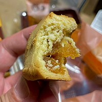
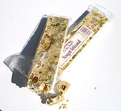
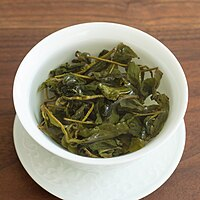

วันเดินทาง & วันลาTravel Dates & Leave Days
| วันDay | วันที่Date | สถานะStatus | แผนทริปTrip Plan |
|---|---|---|---|
| ศุกร์Fri | 1 พ.ค.1 May | วันแรงงาน (หยุด)Labour Day (Holiday) | Day 1 — ถึงไทเปDay 1 — Arrive Taipei |
| เสาร์Sat | 2 พ.ค.2 May | วันหยุดสุดสัปดาห์Weekend | Day 2 — จีหลง + จิ่วเฟิ่นDay 2 — Keelung + Jiufen |
| อาทิตย์Sun | 3 พ.ค.3 May | วันหยุดสุดสัปดาห์Weekend | Day 3 — Sandiaoling + อู่ไหลDay 3 — Sandiaoling + Wulai |
| จันทร์Mon | 4 พ.ค.4 May | วันฉัตรมงคล (หยุด)Coronation Day (Holiday) | Day 4 — HSR ไปเกาสงDay 4 — HSR to Kaohsiung |
| อังคารTue | 5 พ.ค.5 May | ใช้วันลาAnnual Leave | Day 5 — Pier-2 + ศิลปะ + แสงสีเสียงDay 5 — Pier-2 + Art + Light Show |
| พุธWed | 6 พ.ค.6 May | ใช้วันลาAnnual Leave | Day 6 — เจดีย์มังกร + บินกลับDay 6 — Dragon Pagodas + Fly home |
การเตรียมตัวจากไทยPre-Trip Preparation
จองแบบ Multi-City (ไป-กลับคนละสนามบิน)Book Multi-City (different departure & return airports)
ขาไป: กรุงเทพฯ (BKK/DMK) ✈️ ไทเป (TPE - เถาหยวน)Outbound: Bangkok (BKK/DMK) ✈️ Taipei (TPE - Taoyuan)
ขากลับ: เกาสง (KHH) ✈️ กรุงเทพฯ (BKK/DMK)Return: Kaohsiung (KHH) ✈️ Bangkok (BKK/DMK)
จองเส้นทาง Taipei → Zuoying ผ่านแอป Klook หรือ KKdayBook Taipei → Zuoying route via Klook or KKday app
มักมีโปร 1 แถม 1 หรือส่วนลด 20% สำหรับนักท่องเที่ยวOften has Buy 1 Get 1 Free or 20% discount for tourists
แลกเงินสด TWD ไปส่วนหนึ่ง สำหรับตลาดกลางคืนExchange some TWD cash for night markets
สมัครบัตร Travel Card (YouTrip, Planet SCB) รูดซื้อของตามร้านสะดวกซื้อและห้าง เรทดีมาก ไม่มีชาร์จ 2.5%Get a Travel Card (YouTrip, Planet SCB) — great exchange rate, no 2.5% foreign transaction fee
ซื้อ SIM Card หรือ eSIM ล่วงหน้าจากไทย ไปถึงเปิดใช้งานได้เลยBuy SIM Card or eSIM in advance — activate upon arrival
ข้อมูลพื้นฐานBasic Info
ระบบขนส่งTransportation
บัตรเติมเงินใช้ได้ทุกระบบขนส่ง + ร้านสะดวกซื้อ (7-11, FamilyMart)Rechargeable card for all public transport + convenience stores (7-11, FamilyMart)
ซื้อที่สนามบินหรือสถานี MRT ราคา 100 TWD แนะนำเติม 1,000 TWDBuy at airport or MRT station for 100 TWD. Recommend loading 1,000 TWD
ส่วนลด 20% ค่า MRT20% MRT discountMRT (รถไฟฟ้า)MRT (Metro)
สะดวก สะอาด ป้ายอังกฤษชัด วิ่ง 06:00-00:00Convenient, clean, English signs. Runs 06:00-00:00
ห้ามกินดื่ม! ปรับ 1,500-7,500 TWDNo eating/drinking! Fine 1,500-7,500 TWDHSR (รถไฟความเร็วสูง)HSR (High Speed Rail)
ไทเป-เกาสง 1.5 ชม. ตั๋ว ~1,490 TWDTaipei-Kaohsiung 1.5 hrs. Ticket ~1,490 TWD
จองผ่าน Klook ได้โปร 1 แถม 1Book via Klook for Buy 1 Get 1 FreeTRA (รถไฟท้องถิ่น)TRA (Local Train)
ครอบคลุมทั่วเกาะ ใช้ EasyCard แตะได้เลย ไปอู่ไหล/จีหลงIsland-wide coverage. Tap EasyCard to ride. Goes to Wulai/Keelung
Bus (รถเมล์)Bus
ครอบคลุมทั่วเมือง ใช้ EasyCard แตะขึ้น-ลง ราคาถูก 15-30 TWDCity-wide coverage. Tap EasyCard on/off. Cheap 15-30 TWD
ใช้ Google Maps ดูสายได้Use Google Maps for routesTaxi / UberTaxi / Uber
เริ่มต้น 85 TWD ทุก 200m +5 TWD โบกแท็กซี่สีเหลืองหรือเรียกผ่านแอปStarting 85 TWD, +5 TWD per 200m. Hail yellow cabs or use apps
แอป: Uber / LINE TAXI (สั่งผ่าน LINE) / Taiwan Taxi 55688 (แอปท้องถิ่นใหญ่สุด)Apps: Uber / LINE TAXI (order via LINE) / Taiwan Taxi 55688 (largest local app)
(ศุกร์) สวัสดีไทเป — เช็คอิน & สายมู(Fri) Hello Taipei — Check-in & Temples
เดินทางถึง + เที่ยวรอบเมืองหลวงArrive + Explore the capital city
สถานที่ใกล้เคียง — ถ้ามีเวลา (กดดู)Nearby Spots — If You Have Time (tap)
FREITAG — ร้านกระเป๋ารีไซเคิลจากสวิส ดีไซน์เท่
TankQ Café — ย่าน Zhongxiao Dunhua ตกแต่งสวย ถ่ายรูปเก๋
KA Sky Coffee — คาเฟ่วิวสูง บรรยากาศดีFujin Tree 353 — Japanese-style café, Fujin Street full of trendy shops
FREITAG — Swiss recycled bag store, cool design
TankQ Café — Zhongxiao Dunhua area, stylish & photogenic
KA Sky Coffee — High-rise café, great atmosphere
ร้านอาหารแนะนำในย่านนี้ (กดดู)Recommended Restaurants Nearby (tap)
(เสาร์) เมืองท่าจีหลง & จิ่วเฟิ่น(Sat) Keelung Port City & Jiufen
บ้านสีรุ้ง + หินแปลก + หมู่บ้าน Spirited AwayRainbow houses + Rock formations + Spirited Away village
(อาทิตย์) เทรลน้ำตก & หมู่บ้านอาตายัล(Sun) Waterfall Trail & Atayal Village
Sandiaoling เทรลเช้า + อู่ไหลน้ำตก & รถรางบ่ายSandiaoling morning trail + Wulai waterfall & log cart afternoon
ตารางรถไฟ Sandiaoling (กดดู)Sandiaoling Train Timetable (tap to view)
09:16 · 10:15 · 12:07
17:07 · 18:45 · 21:18
สถานที่ใกล้เคียง — ถ้ามีเวลา (กดดู)Nearby Spots — If You Have Time (tap)
วิธีไป: ต่อรถไฟสาย Pingxi จากสถานี Ruifang (อยู่ใกล้ Sandiaoling) — ตัด Wulai แล้วใส่สือเฟิ่นแทนได้Write wishes & release sky lanterns on train tracks! + Shifen Waterfall "Niagara of Taiwan"
How to go: Pingxi Line from Ruifang Station (near Sandiaoling) — swap Wulai for Shifen if you prefer
(จันทร์) พลังศรัทธา & ปั่นจักรยานรับลมทะเล(Mon) Faith & Cycling by the Sea
HSR ลงใต้ + พุทธอุทยาน + เกาะฉีจิน + ซีฟู้ดสดHSR south + Buddha Museum + Cijin Island + Fresh Seafood
ที่พักเกาสง (กดดู)Kaohsiung Hotels (tap)
(อังคาร) วาร์ปสู่แดนอาร์ต — ศิลปะริมอ่าว(Tue) Art District — Harbor Art Walk
Pier-2 + สะพานหมุน + Music Center + Dome of LightPier-2 + Rotating Bridge + Music Center + Dome of Light
(พุธ) สะเดาะเคราะห์ & ซื้อของฝากก่อนกลับ(Wed) Turn Luck Around & Souvenir Shopping
เจดีย์มังกร-เสือ + Dream Mall + บินกลับDragon & Tiger Pagodas + Dream Mall + Fly home
ของกินห้ามพลาดMust-Try Food
ชานมไข่มุกBubble Milk Tea
ต้นกำเนิดชานมไข่มุก! แนะนำ 50 Lan, CoCo, Tiger SugarThe birthplace of bubble tea! Try 50 Lan, CoCo, Tiger Sugar
เสี่ยวหลงเปาXiao Long Bao
ซุปดัมพลิ่งไส้หมูน้ำซุปเต็ม ดังสุด Din Tai FungSoup dumplings filled with pork broth. Most famous: Din Tai Fung
ซาลาเปาอบโอ่งBlack Pepper Bun
ไส้หมูพริกไทยอบในโอ่งดิน กรอบนอกนุ่มใน ของดีตลาดเหราเหอPork & pepper filling baked in clay oven. Crispy outside, soft inside. Raohe market specialty
บะหมี่เนื้อตุ๋นBeef Noodle Soup
อาหารประจำชาติ น้ำซุปเข้มข้น เนื้อเปื่อยนุ่มTaiwan's national dish. Rich broth with tender braised beef
ไก่ทอด Hot StarHot Star Fried Chicken
ไก่ทอดแผ่นใหญ่เท่าหน้า กรอบนอกนุ่มในGiant fried chicken cutlet as big as your face. Crispy and juicy
เผือกทอดไส้หมูหยองTaro Ball w/ Pork Floss
ของดีตลาด Ningxia กรอบนอก เผือกเนียนในNingxia market specialty. Crispy shell, creamy taro inside
ประโยคภาษาจีนที่ใช้บ่อยUseful Chinese Phrases
เคล็ดลับ & สิ่งควรรู้Tips & Good to Know
ห้ามกิน-ดื่มบน MRT — ปรับ 1,500-7,500 TWD (รวมหมากฝรั่ง+น้ำเปล่า)No eating or drinking on MRT — Fine 1,500-7,500 TWD (incl. gum & water)
ห้ามสูบบุหรี่ในที่สาธารณะ — ปรับ 2,000-10,000 TWDNo smoking in public areas — Fine 2,000-10,000 TWD


